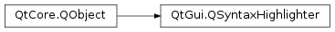

QSyntaxHighlighter¶
Synopsis¶
Functions¶
- def
currentBlock() - def
currentBlockState() - def
currentBlockUserData() - def
document() - def
format(pos) - def
previousBlockState() - def
setCurrentBlockState(newState) - def
setCurrentBlockUserData(data) - def
setDocument(doc) - def
setFormat(start, count, color) - def
setFormat(start, count, font) - def
setFormat(start, count, format)
Virtual functions¶
- def
highlightBlock(text)
Slots¶
- def
rehighlight() - def
rehighlightBlock(block)
Detailed Description¶
The
PySide2.QtGui.QSyntaxHighlighterclass allows you to define syntax highlighting rules, and in addition you can use the class to query a document’s current formatting or user data.The
PySide2.QtGui.QSyntaxHighlighterclass is a base class for implementingPySide2.QtGui.QTextDocumentsyntax highlighters. A syntax highligher automatically highlights parts of the text in aPySide2.QtGui.QTextDocument. Syntax highlighters are often used when the user is entering text in a specific format (for example source code) and help the user to read the text and identify syntax errors.To provide your own syntax highlighting, you must subclass
PySide2.QtGui.QSyntaxHighlighterand reimplementPySide2.QtGui.QSyntaxHighlighter.highlightBlock().When you create an instance of your
PySide2.QtGui.QSyntaxHighlightersubclass, pass it thePySide2.QtGui.QTextDocumentthat you want the syntax highlighting to be applied to. For example:editor = QTextEdit() highlighter = MyHighlighter(editor.document())After this your
PySide2.QtGui.QSyntaxHighlighter.highlightBlock()function will be called automatically whenever necessary. Use yourPySide2.QtGui.QSyntaxHighlighter.highlightBlock()function to apply formatting (e.g. setting the font and color) to the text that is passed to it.PySide2.QtGui.QSyntaxHighlighterprovides thePySide2.QtGui.QSyntaxHighlighter.setFormat()function which applies a givenPySide2.QtGui.QTextCharFormaton the current text block. For example:class MyHighlighter(QSyntaxHighlighter): def highlightBlock(self, text): myClassFormat = QTextCharFormat() myClassFormat.setFontWeight(QFont.Bold) myClassFormat.setForeground(Qt.darkMagenta) pattern = QString("\\bMy[A-Za-z]+\\b") expression = QRegExp(pattern) index = text.indexOf(expression) while index >= 0: length = expression.matchedLength() setFormat(index, length, myClassFormat) index = text.indexOf(expression, index + length)Some syntaxes can have constructs that span several text blocks. For example, a C++ syntax highlighter should be able to cope with
/*...*/multiline comments. To deal with these cases it is necessary to know the end state of the previous text block (e.g. “in comment”).Inside your
PySide2.QtGui.QSyntaxHighlighter.highlightBlock()implementation you can query the end state of the previous text block using thePySide2.QtGui.QSyntaxHighlighter.previousBlockState()function. After parsing the block you can save the last state usingPySide2.QtGui.QSyntaxHighlighter.setCurrentBlockState().The
PySide2.QtGui.QSyntaxHighlighter.currentBlockState()andPySide2.QtGui.QSyntaxHighlighter.previousBlockState()functions return an int value. If no state is set, the returned value is -1. You can designate any other value to identify any given state using thePySide2.QtGui.QSyntaxHighlighter.setCurrentBlockState()function. Once the state is set thePySide2.QtGui.QTextBlockkeeps that value until it is set set again or until the corresponding paragraph of text is deleted.For example, if you’re writing a simple C++ syntax highlighter, you might designate 1 to signify “in comment”:
multiLineCommentFormat = QTextCharFormat() multiLineCommentFormat.setForeground(Qt.red) startExpression = QRegExp("/\\*") endExpression = QRegExp("\\*/") setCurrentBlockState(0) startIndex = 0 if previousBlockState() != 1: startIndex = text.indexOf(startExpression) while startIndex >= 0: endIndex = text.indexOf(endExpression, startIndex) if endIndex == -1: setCurrentBlockState(1) commentLength = text.length() - startIndex else: commentLength = endIndex - startIndex + endExpression.matchedLength() setFormat(startIndex, commentLength, multiLineCommentFormat) startIndex = text.indexOf(startExpression, startIndex + commentLength)In the example above, we first set the current block state to 0. Then, if the previous block ended within a comment, we highlight from the beginning of the current block (
startIndex = 0). Otherwise, we search for the given start expression. If the specified end expression cannot be found in the text block, we change the current block state by callingPySide2.QtGui.QSyntaxHighlighter.setCurrentBlockState(), and make sure that the rest of the block is highlighted.In addition you can query the current formatting and user data using the
PySide2.QtGui.QSyntaxHighlighter.format()andPySide2.QtGui.QSyntaxHighlighter.currentBlockUserData()functions respectively. You can also attach user data to the current text block using thePySide2.QtGui.QSyntaxHighlighter.setCurrentBlockUserData()function.PySide2.QtGui.QTextBlockUserDatacan be used to store custom settings. In the case of syntax highlighting, it is in particular interesting as cache storage for information that you may figure out while parsing the paragraph’s text. For an example, see thePySide2.QtGui.QSyntaxHighlighter.setCurrentBlockUserData()documentation.
-
class
PySide2.QtGui.QSyntaxHighlighter(parent)¶ -
class
PySide2.QtGui.QSyntaxHighlighter(parent) Parameters: parent – PySide2.QtCore.QObjectConstructs a
PySide2.QtGui.QSyntaxHighlighterwith the givenparent.If the parent is a
PySide2.QtWidgets.QTextEdit, it installs the syntax highlighter on the parents document. The specifiedPySide2.QtWidgets.QTextEditalso becomes the owner of thePySide2.QtGui.QSyntaxHighlighter.Constructs a
PySide2.QtGui.QSyntaxHighlighterand installs it onparent. The specifiedPySide2.QtGui.QTextDocumentalso becomes the owner of thePySide2.QtGui.QSyntaxHighlighter.
-
PySide2.QtGui.QSyntaxHighlighter.currentBlock()¶ Return type: PySide2.QtGui.QTextBlockReturns the current text block.
-
PySide2.QtGui.QSyntaxHighlighter.currentBlockState()¶ Return type: PySide2.QtCore.intReturns the state of the current text block. If no value is set, the returned value is -1.
-
PySide2.QtGui.QSyntaxHighlighter.currentBlockUserData()¶ Return type: PySide2.QtGui.QTextBlockUserDataReturns the
PySide2.QtGui.QTextBlockUserDataobject previously attached to the current text block.
-
PySide2.QtGui.QSyntaxHighlighter.document()¶ Return type: PySide2.QtGui.QTextDocumentReturns the
PySide2.QtGui.QTextDocumenton which this syntax highlighter is installed.
-
PySide2.QtGui.QSyntaxHighlighter.format(pos)¶ Parameters: pos – PySide2.QtCore.intReturn type: PySide2.QtGui.QTextCharFormatReturns the format at
positioninside the syntax highlighter’s current text block.
-
PySide2.QtGui.QSyntaxHighlighter.highlightBlock(text)¶ Parameters: text – unicode Highlights the given text block. This function is called when necessary by the rich text engine, i.e. on text blocks which have changed.
To provide your own syntax highlighting, you must subclass
PySide2.QtGui.QSyntaxHighlighterand reimplement . In your reimplementation you should parse the block’stextand callPySide2.QtGui.QSyntaxHighlighter.setFormat()as often as necessary to apply any font and color changes that you require. For example:class MyHighlighter(QSyntaxHighlighter): def highlightBlock(self, text): myClassFormat = QTextCharFormat() myClassFormat.setFontWeight(QFont.Bold) myClassFormat.setForeground(Qt.darkMagenta) pattern = QString("\\bMy[A-Za-z]+\\b") expression = QRegExp(pattern) index = text.indexOf(expression) while index >= 0: length = expression.matchedLength() setFormat(index, length, myClassFormat) index = text.indexOf(expression, index + length)
See the
Detailed Descriptionfor examples of usingPySide2.QtGui.QSyntaxHighlighter.setCurrentBlockState(),PySide2.QtGui.QSyntaxHighlighter.currentBlockState()andPySide2.QtGui.QSyntaxHighlighter.previousBlockState()to handle syntaxes with constructs that span several text blocks
-
PySide2.QtGui.QSyntaxHighlighter.previousBlockState()¶ Return type: PySide2.QtCore.intReturns the end state of the text block previous to the syntax highlighter’s current block. If no value was previously set, the returned value is -1.
-
PySide2.QtGui.QSyntaxHighlighter.rehighlight()¶ Reapplies the highlighting to the whole document.
-
PySide2.QtGui.QSyntaxHighlighter.rehighlightBlock(block)¶ Parameters: block – PySide2.QtGui.QTextBlockReapplies the highlighting to the given
PySide2.QtGui.QTextBlockblock.
-
PySide2.QtGui.QSyntaxHighlighter.setCurrentBlockState(newState)¶ Parameters: newState – PySide2.QtCore.intSets the state of the current text block to
newState.
-
PySide2.QtGui.QSyntaxHighlighter.setCurrentBlockUserData(data)¶ Parameters: data – PySide2.QtGui.QTextBlockUserDataAttaches the given
datato the current text block. The ownership is passed to the underlying text document, i.e. the providedPySide2.QtGui.QTextBlockUserDataobject will be deleted if the corresponding text block gets deleted.PySide2.QtGui.QTextBlockUserDatacan be used to store custom settings. In the case of syntax highlighting, it is in particular interesting as cache storage for information that you may figure out while parsing the paragraph’s text.For example while parsing the text, you can keep track of parenthesis characters that you encounter (‘{[(‘ and the like), and store their relative position and the actual
PySide2.QtCore.QCharin a simple class derived fromPySide2.QtGui.QTextBlockUserData:class MyHighlighter(QSyntaxHighlighter): def highlightBlock(self, text): myClassFormat = QTextCharFormat() myClassFormat.setFontWeight(QFont.Bold) myClassFormat.setForeground(Qt.darkMagenta) pattern = QString("\\bMy[A-Za-z]+\\b") expression = QRegExp(pattern) index = text.indexOf(expression) while index >= 0: length = expression.matchedLength() setFormat(index, length, myClassFormat) index = text.indexOf(expression, index + length)
During cursor navigation in the associated editor, you can ask the current
PySide2.QtGui.QTextBlock(retrieved using theQTextCursor.block()function) if it has a user data object set and cast it to yourBlockDataobject. Then you can check if the current cursor position matches with a previously recorded parenthesis position, and, depending on the type of parenthesis (opening or closing), find the next opening or closing parenthesis on the same level.In this way you can do a visual parenthesis matching and highlight from the current cursor position to the matching parenthesis. That makes it easier to spot a missing parenthesis in your code and to find where a corresponding opening/closing parenthesis is when editing parenthesis intensive code.
-
PySide2.QtGui.QSyntaxHighlighter.setDocument(doc)¶ Parameters: doc – PySide2.QtGui.QTextDocumentInstalls the syntax highlighter on the given
PySide2.QtGui.QTextDocumentdoc. APySide2.QtGui.QSyntaxHighlightercan only be used with one document at a time.
-
PySide2.QtGui.QSyntaxHighlighter.setFormat(start, count, font)¶ Parameters: - start –
PySide2.QtCore.int - count –
PySide2.QtCore.int - font –
PySide2.QtGui.QFont
This is an overloaded function.
The specified
fontis applied to the current text block from thestartposition for a length ofcountcharacters.The other attributes of the current text block, e.g. the font and background color, are reset to default values.
- start –
-
PySide2.QtGui.QSyntaxHighlighter.setFormat(start, count, format) Parameters: - start –
PySide2.QtCore.int - count –
PySide2.QtCore.int - format –
PySide2.QtGui.QTextCharFormat
This function is applied to the syntax highlighter’s current text block (i.e. the text that is passed to the
PySide2.QtGui.QSyntaxHighlighter.highlightBlock()function).The specified
formatis applied to the text from thestartposition for a length ofcountcharacters (ifcountis 0, nothing is done). The formatting properties set informatare merged at display time with the formatting information stored directly in the document, for example as previously set withPySide2.QtGui.QTextCursor‘s functions. Note that the document itself remains unmodified by the format set through this function.- start –
-
PySide2.QtGui.QSyntaxHighlighter.setFormat(start, count, color) Parameters: - start –
PySide2.QtCore.int - count –
PySide2.QtCore.int - color –
PySide2.QtGui.QColor
This is an overloaded function.
The specified
coloris applied to the current text block from thestartposition for a length ofcountcharacters.The other attributes of the current text block, e.g. the font and background color, are reset to default values.
- start –
© 2018 The Qt Company Ltd. Documentation contributions included herein are the copyrights of their respective owners. The documentation provided herein is licensed under the terms of the GNU Free Documentation License version 1.3 as published by the Free Software Foundation. Qt and respective logos are trademarks of The Qt Company Ltd. in Finland and/or other countries worldwide. All other trademarks are property of their respective owners.